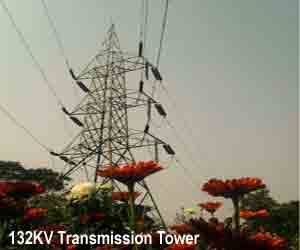

Factor to be Considered for Constructing a Generating Station
Transmission of Electrical Energy
Electrical Power Transmission System
Electrical power is generated at different generating stations. These generating stations are not necessarily situated at the load center. During construction of generating station number of factors to be considered from economical point of view. These all factors may not be easily available at load center, hence generating stations are not normally situated very nearer to load center. Load center is the place where maximum power is consumed. Hence there must be some means by which the generated power must be transmitted to the load center. Electrical transmission system is the means of transmitting power from generating station to different load centers.
Factor to be Considered for Constructing a Generating Station
During planning of construction of generating station the following factors to be considered for economical generation of electrical power.
1) Easy availability of water for thermal power generating station.
2) Easy availability of land for construction of power station including it's staff township.
3) For hydro power station there must be a dam on river. So proper place on the river must be chosen in such a way that the construction of the dam can be done in most optimum way.
4) For thermal power station easy availability of fuel is one of the most important factors to be considered.
5) Better communication for goods as well as employees of the power station also to be kept into consideration.
6) For transporting very big spare parts of turbines, alternators etc, there must be wide road ways, rain communication, and deep and wide river must pass away nearby the power station.
7) For nuclear power plant, it must be situated in such a distance from common location so that there may be any effect from nuclear reaction the heath of common people.
Many other factors also to be considered, but there are beyond the scope of our discussion.
All the factors listed above are very difficult to be available at load center. The power station or generating station must be situated where all the facilities are easily available. This place may not be necessarily at the load center. The power generated at generating station then transmitted to the load center by means of electrical power transmission system as we said earlier.

The power generated at generating station is in low voltage level as low voltage power generation has some economical values. Low voltage power generation is more economical than high voltage power generation. At low voltage level, bot weight and wide of insulation is less in the alternator, this directly reduces the cost and size of alternator. But this low voltage level power can not be transmitted directly to the consumer end as because this low voltage power transmission is not at all economical. Hence although low voltage power generation is economical but low voltage electrical power transmission is not economical. Electrical power is directly proportional to the product of electrical electric current and voltage of system. So for transmitting certain electrical power from one place to another, if the voltage of the power is increased then associated electric current of this power is reduced. Reduced electric current means less I2R loss in the system, less cross sectional area of the conductor means less capital involvement and decreased electric current causes improvement in voltage regulation of power transmission system and improved voltage regulation indicates quality power. Because of these three reasons electrical power mainly transmitted at high voltage level.
Again at distribution end for efficient distribution of the transmitted power, it is stepped down to its desired low voltage level.
So it can be concluded that first the electrical power is generated at low voltage level then it stepped up to high voltage for efficient transmission of electrical energy. Lastly for distribution of electrical energy or power to different consumers it is stepped down to desired low voltage level.
This brief discussion of electrical transmission system and network, but now we will discussed little bit more details about transmission of electrical energy.
Transmission of Electrical Energy
Fundamentally there are two systems by which electrical energy can be transmitted.
(1) High voltage DC electrical transmission system.
(2) High voltage AC electrical transmission system.
There are some advantages in using DC transmission system-
i) Only two conductor are required for Dc transmission system. It is further possible to use only one conductor of DC transmission system if earth is utilized as return path of the system.
ii) The potential stress on the insulator of DC transmission system is about 70% of same voltage AC transmission system. Hence less insulation cost is involved in DC transmission system.
iii) Inductance, capacitance, phase displacement and surge problems can be eliminated in DC system.
Even having these advantages in DC system, generally electrical energy is transmitted by three(3) phase AC transmission system.
i)The alternating voltages can easily be stepped up & down, which is not possible in DC transmission system.
ii) Maintenance of AC substation is quite easy and economical compared to DC syte.
iii) The transforming in AC electrical sub station is much easier than motor-generator sets in DC system.
But AC transmission system also have some disadvantages like,
i) The volume of conductor used in AC system is much higher than that of DC.
ii)The reactance of the line, affects the voltage regulation of electrical power transmission system.
iii) Problems of skin effects and proximity effects only found in AC system.
iv) AC transmission system is more likely to be affected by corona effect than DC system.
v) Construction of AC electrical power transmission network is more completed than DC system.
vi) Proper synchronizing is required before inter connecting two or more transmission lines together, synchronizing can totally be omitted in DC transmission system.
 by
by